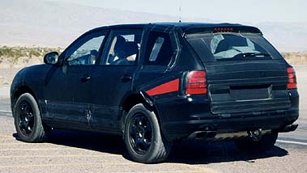
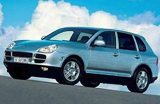
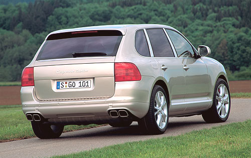

| Home | About | Topics | Rejects | Abortions |
|
|
||||||||
|
||||||||
Like other members of the Porsché Club of America, I too know the value of the finer things in life, "good friends and good conversation", whether it's chatting with my friends on my cellphone in traffic or discussing office politics with my friends at our kids' little league games. But whereas some have been PCA members since the mid-1950s and have known the pleasure of owning dozens of vehicles over their lives, I only recently joined in anticipation of the delivery of my first Porsché.
After years of selling myself short, I finally purchased a Porsché: a spicy pre-ordered 2003 Porsché Cayenne Turbo. |
|||
|
To be frank, I always considered Porsché owners a sorry pretentious lot who invested far too much emotional capital into their cars. But now I look back on those thoughts and smile as only a true Porsché aficionado can smile, smitten with the love that only a true Porsché aficionado can feel.
 The Cayenne is a true Porsché thoroughbred. With the Turbo model's 450 horsepower naturally aspirated V-8 engine which gets this baby from zero to sixty in 5.5 seconds flat, I finally know the thrill Porsché fans have been raving about all these years. The automanual transmission gives me peace of mind, because I know I can always take control and avoid dangers like fallen powerlines and sudden blizzards, while letting it shift for me like an ordinary automatic the rest of the time so I'm free to concentrate on more pressing concerns and also get the better mileage that comes with automatics. What's more, even though I have a history of wearing out clutches, the Porsché dealer assured me no one can wear out one of these automanual kinds. Whenever I'm asked why I'm buying a Cayenne (and I encourage people to ask), I have a simple answer: handling. Sure, I like driving -- otherwise why would I buy a Porsché? And nothing spoils a good drive like feeling every bump in the road transmitted up through the seat and into my buttocks. Rest assured, Porsché outdid itself in engineering the smoothest ride on the market, thanks in no small part to their abandoning antiquated air-cooled and rear engined designs, which are infamous for producing oversteer and poor handling.  With the certain success of Porsché's Cayenne model, it surely won't be long before they incorporate some of the features that make it so successful into their Carrera line. The Carrera may look sexy, but have you ever tried to carry groceries or your 2 children around in it? Just imagine how much easier it'd be with four doors instead of two! And though I consider my Cayenne perfect, I wouldn't be above incorporating more features from the Carrera line like one of those sexy spoilers that make them go so fast. (I could mention the Boxsters, but since they cost only half what my Cayenne does, it's a stretch to properly call them Porschés.) Though I don't yet own my Cayenne, I've already named her "Caytie" and ordered vanity plates bearing her name. It's part of my philosophy of treating my new car well from the start so she'll last longer than the three year lease term I'm accustomed to. In addition to prudent driving like throwing it into drive as soon as it's started up so as to get its vital fluids flowing as soon as possible, this name lets my Cayenne know she is a valued member of my family.  So when you see me out on the road tooling around in my new Porsché Cayenne, hide your jealousy, extend your arm, and wave. If I see you, I'll be sure to wave back.
And if not, I'll be seeing you at the next Porsché Club of America meeting, friend. |